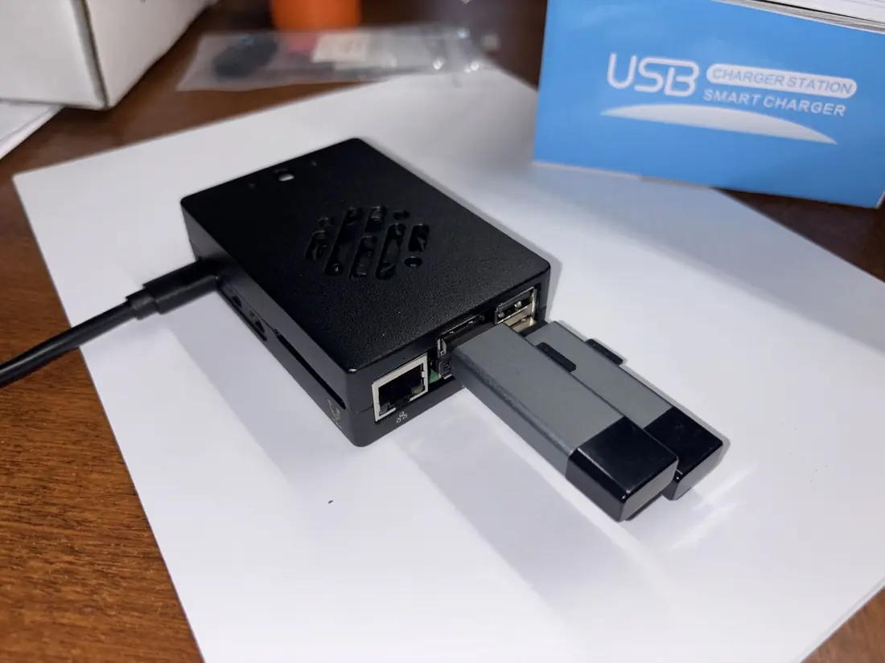

There's no single right kit. The right kit is the one that solves the actual field problem — no more, no less. Start with the smallest level that works, and build from there only when the mission setting calls for it.

The four kit levels
Each level builds on the last. A team can start at Level 1 and add components as the setting grows or funding allows. Every level includes printed guides and downloadable PDFs so the process continues after the visiting team leaves.
- Level 1 — Basic phone kit — printed transfer guides, microSD card or USB drive loaded with resources, and simple step-by-step instructions. No technical setup needed.
- Level 2 — Local library kit — Raspberry Pi server, storage, and power supply. Creates a local Wi-Fi network that any nearby phone can join and browse offline.
- Level 3 — Power and media kit — adds battery backup, solar panel, Bluetooth speaker, and a portable projector for group teaching sessions and film nights.
- Level 4 — Satellite receive kit — optional Free-to-Air broadcast reception, projection, and replay path for regions where useful Christian content is already broadcasting.

How to choose the right level
- Define the use case first
Is the need personal phone sharing, group teaching, local library access, projector teaching, satellite broadcast reception, or all of those? The use case drives everything else.
- Start at the base level
A Level 1 phone kit costs almost nothing and works everywhere. Start there unless you already know the field needs more.
- Add power only when it's a real need
Choose battery or solar based on how long sessions run and how reliable the local grid is. Don't add solar costs if wall power is available.
- Add media for group settings
A projector and speaker only make sense when one screen needs to serve a room or outdoor gathering. Add them when the kit is going to a church, school, or village setting.
- Quote satellite separately
Dish, LNB, alignment, recorder, and power needs vary by region. Treat satellite as a receive-and-replay line item that gets its own assessment — not a default add-on.
- Keep costs itemized
For board reporting and partner transparency, break out each component — Pi, storage, projector, battery, solar, satellite receiver path — so costs are clear and replaceable.
The most common mistake is over-building the first kit. A simple phone-sharing guide and a loaded microSD card can serve a community for years.
Download the Kit Levels overview as a printable PDF for board packets and field planning.
Download Kit Levels PDF